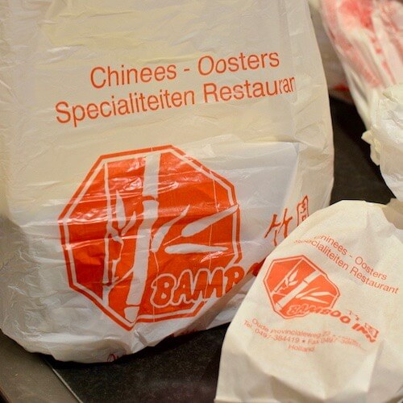

Afhalen bij Bamboo Inn
Meer dan 200 gerechten en vers gemaakte sushi. Bestel online of bel ons, en noem het nummer van het gerecht.
Tijdelijk geen extra kosten bij online afhaal bestellen
Weekactie, vanaf 2 personen
Nasi of bami met ei en vlees, babi pangang, gebakken kipfilet met chilisaus (saus apart), 4 mini loempia's en 2 stokjes saté
€ 20,50Voordeelactie
Geschikt vanaf 2 personen. Kies 2 of meer gerechten; u krijgt er 2 kleine bakjes nasi, bami of witte rijst bij.
- Tjap tjoy
- Foe yong hai
- Koe lo yuk
- Kipfilet met ketjapsaus
- Pikante kip in Sichuaanse saus
- Tsa tsiu, geroosterd varkensvlees
- Babi pangang
- 3 stokjes saté
- Chun kin, 8 mini loempia's
- 2gerechten€ 20,00
- 3gerechten€ 23,50
- 4gerechten€ 27,50
- 5gerechten€ 31,50
- 6gerechten€ 35,50
- 7gerechten€ 39,50
- 8gerechten€ 43,50
- 9gerechten€ 47,50
Afhaalmenu 2026
Gerechten met nummer, zodat u snel kunt bestellen. Kip-, vlees-, rund-, garnalen-, mihoen-, tjap tjoy-, Indische gerechten en specialiteiten zijn glutenvrij (foe yong hai zonder saus). Afhaalprijslijst als pdf
Soepen
- 14,90
Kippensoep
- 24,90
Tomatensoep
- 45,40
Champignonsoep
- 56,90
Wan Tan Tong
Soep met vleespasteitjes
- 66,90
Bamboo Inn soep
Gebonden soep met garnaal en groente
- 6a5,70
Soto Ajam
Pikante Indische bouillon
Voorgerechten
- 75,60
Loempia speciaal
- 89,60
Chinese hors d'oeuvre
Loempia, 2 stokjes saté en atjar
- 98,20
Saté
4 stokjes
- 108,50
Maleisische saté
5 stokjes
- 116,70
Pangsit Goreng
8 gebakken vleespasteitjes met saus
- 124,20
Kroepoek
- 135,30
Pisang Goreng
6 stuks gebakken banaan
- 145,80
Chun Kin
5 Chinese mini loempia's met saus
- 14a5,80
Chun Kin
8 Chinese mini loempia's zonder saus
Bijgerechten
- 153,90
Atjar
- 163,70
Pindasaus
- 173,70
Pikante saus
Babi Pangang saus
- 183,90
Witte rijst
- 193,20
Frikandel met mayonaise
- 203,90
Friet met mayonaise
- 3012,90
Kleine kroepoek
- 310p2,90
Kleine pikante kroepoek
- 3024,70
Sambal pot
- 3034,70
Ketjap pot
Nasi
- 215,90
Nasi Goreng
Kleine portie
- 228,20
Nasi Goreng met ei en vlees
- 2414,30
Nasi Goreng met 4 mini loempia's en 1 stokje saté
- 2514,30
Nasi Goreng met 3 stokjes saté
- 2614,30
Nasi Goreng met gesneden kipfilet
- 2714,30
Nasi Goreng met gesneden varkenshaas
- 2819,80
Nasi Goreng met Chinese garnalen
- 2918,90
Nasi Goreng met gesneden ossenhaas
- 3723,90
Nasi Goreng Bamboo Inn
Chinese garnalen, Babi Pangang, Koe Lo Yuk, saté, mini loempia's
Bami
- 415,90
Bami Goreng
Kleine portie
- 428,20
Bami Goreng met ei en vlees
- 4414,30
Bami Goreng met 4 mini loempia's en 1 stokje saté
- 4514,30
Bami Goreng met 3 stokjes saté
- 4614,30
Bami Goreng met gesneden kipfilet
- 4714,30
Bami Goreng met gesneden varkenshaas
- 4819,80
Bami Goreng met Chinese garnalen
- 4918,90
Bami Goreng met gesneden ossenhaas
- 5723,90
Bami Goreng Bamboo Inn
Chinese garnalen, Babi Pangang, Koe Lo Yuk, saté, mini loempia's
Foe Yong Hai
glutenvrij zonder saus- 6013,80
Foe Yong Hai met vlees
- 6113,80
Foe Yong Hai met kip
- 6220,50
Foe Yong Hai met Chinese garnalen
- 6313,20
Foe Yong Hai vegetarisch
Tjap Tjoy
glutenvrij- 7014,50
Tjap Tjoy met vlees
- 7114,50
Tjap Tjoy met kip
- 7218,50
Tjap Tjoy met gesneden runderhaas
- 7319,80
Tjap Tjoy met Chinese garnalen
- 7413,80
Tjap Tjoy vegetarisch
- 7514,30
Vegetarische schotel
Gemengde groenten
Mihoen
glutenvrij- 8014,50
Miefang met vlees
- 8114,50
Miefang met kip
- 8219,80
Miefang met Chinese garnalen
- 8313,60
Miefang vegetarisch
- 8425,90
Miefang Bamboo Inn
Chinese garnalen, Babi Pangang, Koe Lo Yuk, saté, mini loempia's
Kip
glutenvrij- 8816,20
Gefileerde kip in pikante saus
- 8916,20
Gefileerde kip in kerriesaus
- 9016,20
Gefileerde kip in zoetzure saus
- 9116,20
Gefileerde kip met ananas
- 9216,20
Gefileerde kip met champignons
- 9416,20
Gefileerde kip in sambalsaus
- 9516,20
Gefileerde kip in ketjapsaus
- 9616,20
Gefileerde kip in zwarte bonensaus
Tausi
- 9716,20
Gefileerde kip in Szechuaanse saus
Varkensvlees
glutenvrij- 10017,90
Babi Pangang
- 10113,90
Babi Pangang
Kleine portie
- 10218,30
Tsa Tsiu met pikante saus
Geroosterd vlees
- 10318,30
Babi Pangang in ketjapsaus
- 10417,30
Varkensvlees in kerriesaus
- 10517,30
Varkensvlees met champignons
- 10617,30
Varkensvlees met Szechuaanse saus
- 10717,30
Koe Lo Yuk
Gepaneerd varkensvlees met zoetzure saus
- 10817,30
Varkensvlees in pikante saus
- 10917,30
Varkensvlees in zwarte bonensaus
Tausi
- 11018,30
Babi Pangang Spek
Rundvlees
glutenvrij- 12020,50
Runderhaas in pikante saus
- 12120,50
Runderhaas in kerriesaus
- 12320,50
Runderhaas met champignons
- 12520,50
Runderhaas in oestersaus
- 12620,50
Runderhaas met lente-uitjes en gember
Garnalen en vis
glutenvrij- 13121,90
Gepaneerde Chinese garnalen in zoetzure saus
8 stuks
- 13216,90
Gepaneerde Chinese garnalen in zoetzure saus
5 stuks
- 13321,90
Gepaneerde Chinese garnalen in pikante saus
8 stuks
- 13416,90
Gepaneerde Chinese garnalen in pikante saus
5 stuks
- 13521,90
Chinese garnalen in kerriesaus
- 13621,90
Chinese garnalen met champignons
- 13821,90
Chinese garnalen in ketjapsaus
- 13921,90
Chinese garnalen in zwarte bonensaus
Tausi
- 14021,90
Chinese garnalen in sambalsaus
- 14121,90
Chinese garnalen in pikante saus
- 14221,90
Gebakken zalmfilet op taugé in sojasaus
Indisch
glutenvrij- 15513,80
Nasi Rames
- 15618,10
Nasi Rames met mini loempia's en saté
- 15723,90
Nasi Rames Bamboo Inn
Babi Pangang, Foe Yong Hai, mini loempia, saté, Daging Smoor en Sambal Goreng Kering
- 16013,80
Bami Rames
- 16118,10
Bami Rames met mini loempia's en saté
- 16223,90
Bami Rames Bamboo Inn
- 16310,80
Gado Gado met witte rijst
- 16511,50
Daging Smoor
Gekruid stoofrundvlees
Specialiteiten
glutenvrijNasi of bami: toeslag € 2,50. Mihoen: toeslag € 4,00 (kleine portie).
- 17019,50
Kong Po Kai Ting
Blokjes kipfilet met pinda's en pikante kruiden
- 17119,50
Yu Kor Kai
Blokjes kip met cashewnoten
- 17219,50
Soon Chee Kai
Reepjes kip met ui en prei in boterige pikante knoflooksaus
- 17319,50
Sambal Kai
Blokjes kip in sambalsaus
- 17419,50
Ketjap Kai
Blokjes kip in ketjapsaus
- 17520,50
Ta Shi Mi
Ossenhaas in aromatische sojasaus
- 17619,50
Pai Kuat
Varkensribbetjes in knoflooksaus
- 17719,50
Woi Tsa Tsiu
Geroosterd varkensvlees met groenten in aromatische sojasaus
- 17819,50
Chili Kai
Blokjes kip in chilisaus
- 17922,90
Chinese garnalen in chilisaus
- 18122,90
Soon Chee Ha
Chinese garnalen in knoflooksaus
- 18219,50
King Do Yuk
Blokjes varkenshaas met verse ananas in vruchtensaus
- 18320,50
Tausi Ngau Yuk
Gesneden ossenhaas in zwarte bonensaus
- 18419,50
King Do Kai
Blokjes kip met verse ananas in vruchtensaus
- 18522,50
Peking eend
Geroosterde eend met pruimensaus
- 18620,50
Szechuaan Beef
Beeffilet in Szechuaanse saus
Rijsttafels
- 19050,40
Indische rijsttafel, 2 personen
Ajam Sambal, Daging Smoor, Sambal Goreng Telor, mini loempia's, Sajor, 4 stokjes saté, Sambal Goreng Kering, Foe Yong Hai, Gado Gado, Pisang Goreng, kroepoek, Babi Pangang en witte rijst
- 20028,50
Chinese rijsttafel, 1 persoon
Chinese garnalen, Babi Pangang, gebakken banaan, saté, mini loempia's, Foe Yong Hai en witte rijst
- 20251,80
Chinese rijsttafel, 2 personen
Chinese garnalen, Koe Lo Yuk, Babi Pangang, kip met champignons, 2 stokjes saté, Foe Yong Hai en witte rijst. Vanaf 5 personen extra Yu Kor Kai
- 22064,60
Kantonees menu, 2 personen
Wan Tan Tong (soep met vleespasteitjes), mini loempia's, Woi Tsa Tsiu, Soon Chee Ha, Kiong Chong Ngau (gesneden ossenhaas met lente-uitjes en gember), Yu Kor Kai, Yong Chow Fang (Kantonese rijst). Vanaf 5 personen extra gefileerde kip in Szechuaanse saus
Sushi
Vers gemaakte sushi om af te halen, telefonisch of online te bestellen. Alle sushi en sashimi inclusief sojasaus, gember, wasabi en stokjes.
Sashimi, 6 stuks
- 5218,80
Sashimi Salmon
Nigiri, 2 stuks
- 5313,30
Sake
Zalm
- 5333,10
Kani
Krab
- 5343,10
Inari
Tofu
- 5353,10
Tamago
Omelet
Hosomaki, 8 stuks
- 5513,80
Sake Maki
Zalm
- 5522,80
Kappa Maki
Komkommer
- 5532,80
Kani Maki
Krab
- 5542,80
Oshinko Maki
Japanse radijs
- 5553,00
Tamago Maki
Omelet
- 5563,00
Avocado Maki
Uramaki, 8 stuks
- 6519,80
Sake Roll
Zalm, komkommer, avocado
- 65210,00
Tempura Ebi Roll
Gefrituurde garnalen, avocado
- 6539,50
California Roll
Krab, komkommer, avocado
- 6559,50
Chicken Roll
Gebakken kip, komkommer
- 6569,50
Vegetarian Roll
Komkommer, avocado, omelet, tofu, chuka
Crispy rolls, 10 stuks
- 60013,00
Crispy Kani
- 60113,00
Crispy Salmon
- 60213,50
Crispy Ebi
- 60313,00
Crispy Chicken
Komkommer, yakitori kip
Special rolls, 8 stuks
- 70114,00
Soft Shell Salmon Roll
- 70214,50
Flamed Salmon Ebi Roll
Sushi box
- 80112,50
Sushi box A
32 stuks
- 80312,50
Sushi box B
14 stuks
- 81231,50
Sushi box C
32 stuks
- 81332,50
Sushi box D
30 stuks
- 81448,00
Sushi box E
72 stuks
Extra
- 9001,30
Sojasaus
- 9011,80
Gember
- 9021,80
Wasabi
- 9033,80
Chuka Wakame
Geen gerecht gevonden. Probeer een ander woord of een nummer, of bel ons: onze koks maken veel meer dan op de kaart staat.
Sushiprijzen volgens de sushi-afhaalprijslijst (pdf).

Voor een groep van 20 of meer?
Met onze catering staat het eten tot 3 uur warm op tafel, in rechauds. Basic, Extra of Deluxe, vanaf € 20,80 per persoon.